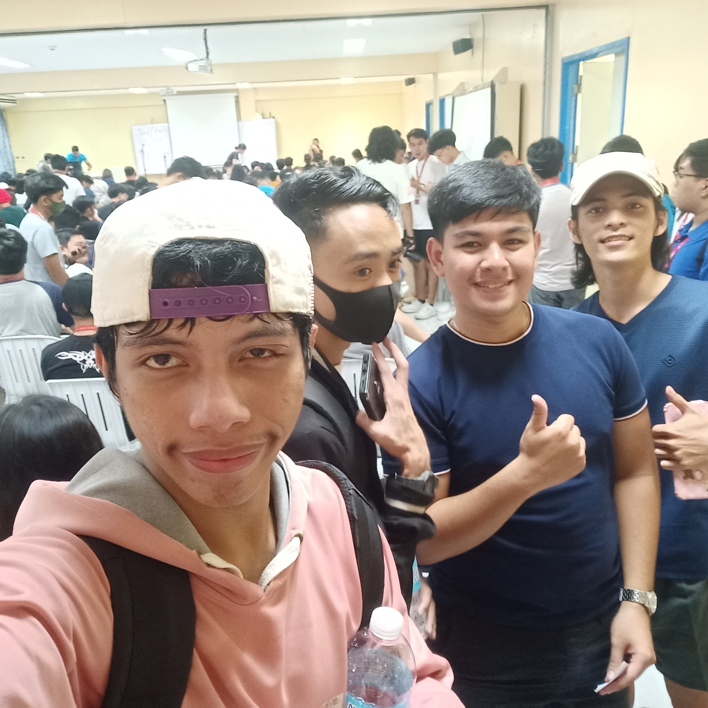
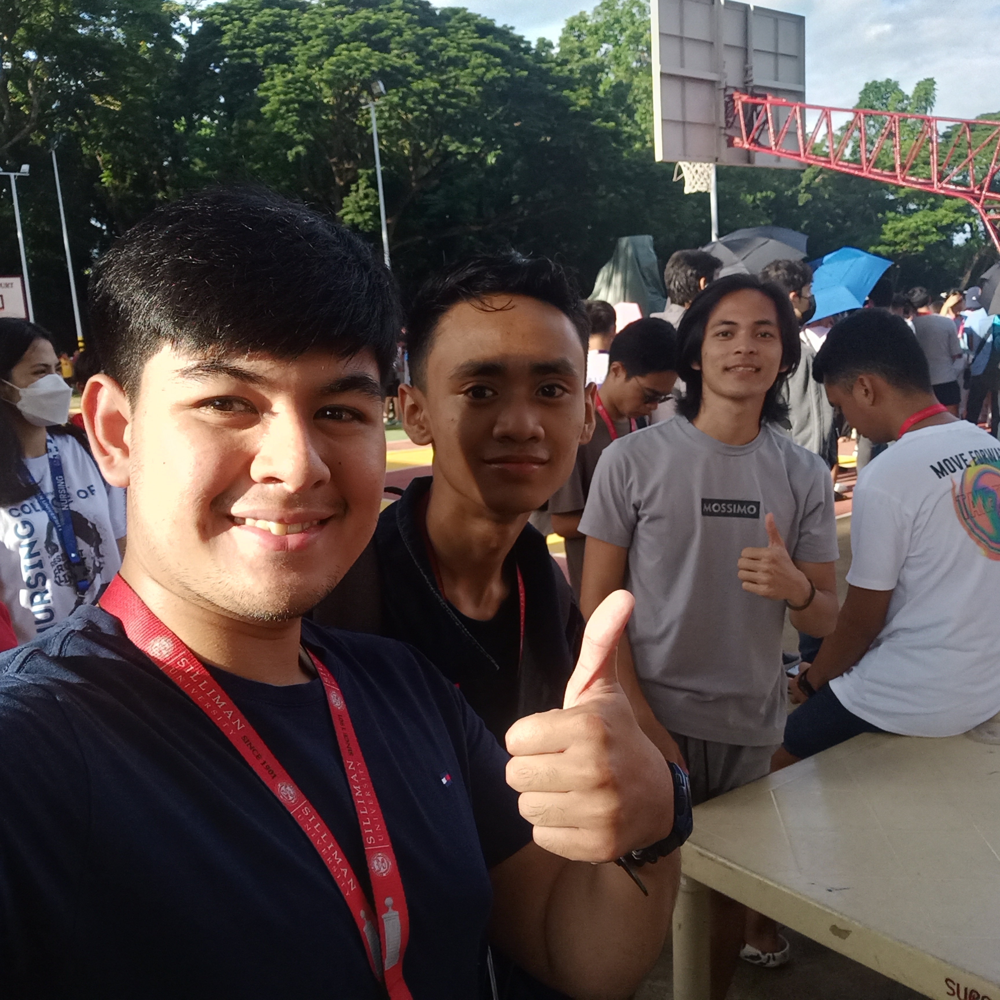
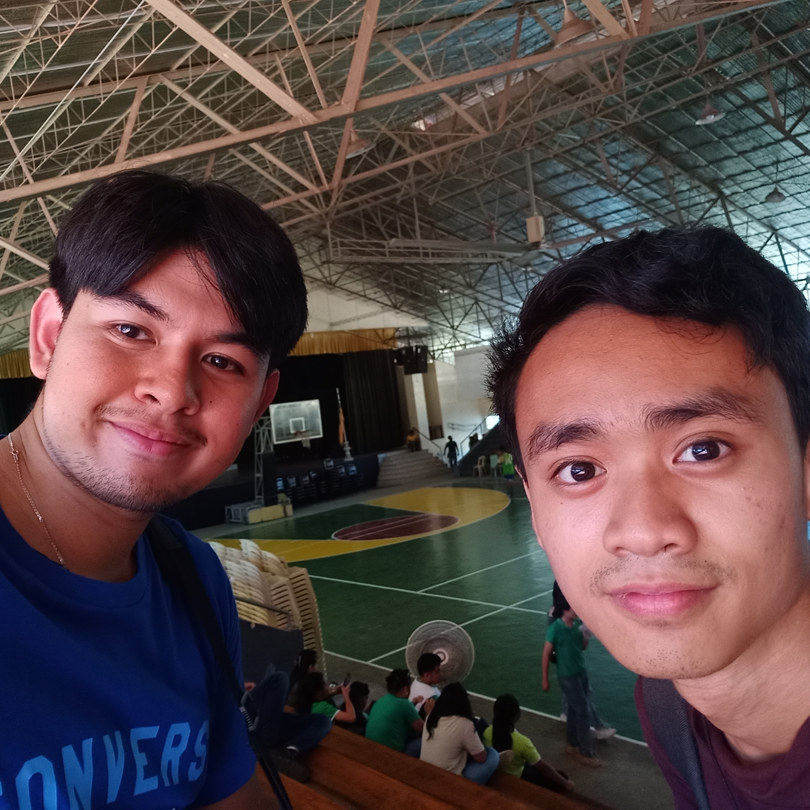
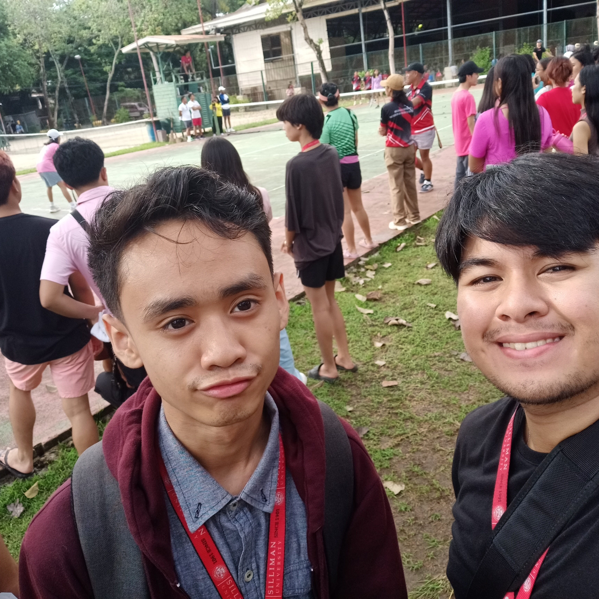
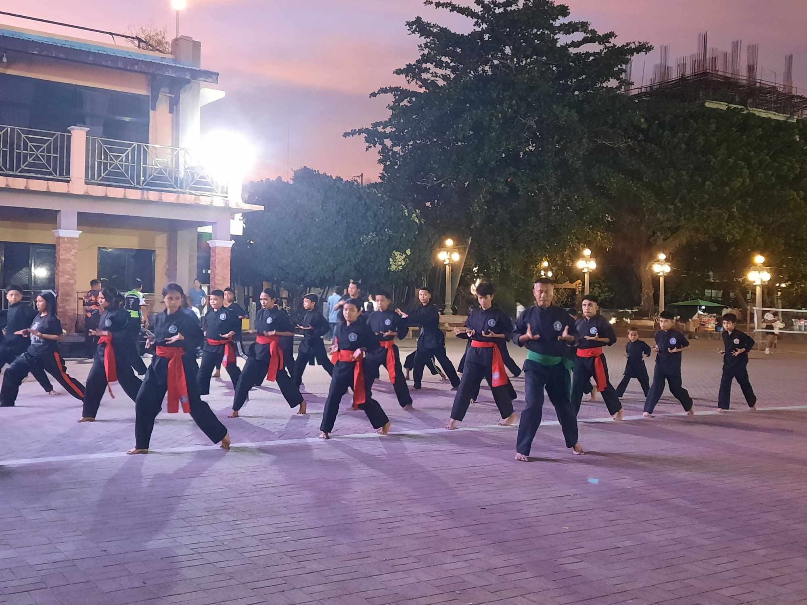

COD and ML Tournaments
Aug.22,2023
Organizer: CCS
Points: 1
The school's Founders Day E-sports tournament was awesome! Seeing students from different courses dive into
intense gaming battles was a total highlight. The ATA hall was well organized and encouraged a sense of competitiveness and the
announcer never failed to hype up the crowd. It felt like a cool blend of fun and school spirit, something that made me appreciate
our community even more. Plus, it was awesome to witness how gaming could bring people closer and create this electric atmosphere.
Me and my friends enjoyed the event very much and we were just observers. Me and my friends were just observers.
The energy during the Founders Day E-sports tournament was infectious. As students faced off in games, there was this undeniable
camaraderie in the air. It didn't matter if someone was a newbie or a pro; everyone was in it together, sharing tips, high-fiving
after a good play, and laughing over unexpected moments. Beyond the screens and controllers, this event showcased a different kind
of teamwork and sportsmanship. It was cool to see how gaming, often seen as an individual activity, became this avenue for building
connections and friendships. And the cheers that erupted as each match reached its peak – it was as if the whole school was collectively
holding its breath, riding the highs and lows of the games.
What made it even more special was the way it embodied the school's spirit. The tournament wasn’t just an event; it was a reflection of
our diverse, close-knit community. It was one of those days where you felt a deeper bond with everyone around you, regardless of whether
you were competing or cheering from the sidelines. This mix of competitiveness and togetherness, wrapped up in the joy of gaming, made the
Founders Day celebration a memorable testament to the unique connections we share at our school.
Because of this event, I am more connected with my schoolmates, feeling a stronger sense of unity. I've discovered a new side to
gaming, seeing how it brings people together in unexpected ways. It has added a spark of excitement and fun to my school experience,
making me look forward to future events. This tournament showed me the power of teamwork and support, beyond just winning or losing.
Overall, it has made me appreciate our school community in a whole new light.
Hibalag Games: Volleyball
Aug.24,2023
Organizer: Silliman University
Points: 1
The school's Founders Day Volleyball tournament was exhilirating! Watching classmates spike, dive, and
hustle on the court was a real thrill. The Alaska Court was very clean and st up well, while the announcers were very into the game.
It felt like a fantastic blend of fun and school pride, something that made me value our community even more. Plus,
it was amazing to see how a sport like volleyball could unite people and create this lively atmosphere. Overall, it was a day filled
with cheers, competitive spirit, and a whole lot of volleyball excitement! Me and my friends were observers.
The volleyball tournament during the school's Founders Day was an electric experience that brought out the true essence of teamwork
and enthusiasm. Witnessing the determination on the faces of classmates as they hustled across the court, diving to save a point or
spiking the ball with precision, was invigorating. What struck me most was the way everyone, regardless of their skill level,
contributed to the vibrant energy of the event. It was more than just a game; it was a showcase of unity, where each serve and rally
seemed to bind us closer as a school community. The sidelines buzzed with encouragement, amplifying the already charged atmosphere
as friends cheered for friends and even those not playing were part of the action through their support.
This tournament was a testament to the camaraderie and spirit that define our school. Beyond the competition, it highlighted the
bonds that tie us together, transcending wins and losses. It wasn’t solely about athletic prowess; it was about the shared moments
of celebration, the laughter that echoed across the gym, and the collective pride in representing our school colors on the court.
The volleyball tournament truly encapsulated the unity and joy within our diverse community, leaving lasting memories of spirited
competition and togetherness.
Because of this event, I am more connected with my classmates, feeling a stronger bond and shared excitement. I've gained a new
appreciation for volleyball, seeing how it brings people together and creates a lively vibe. It's added a dash of fun and team
spirit to my school days, making me look forward to more events like this. This tournament taught me the power of support and
encouragement, showing that it's not just about winning but enjoying the game together. Overall, it's made me feel more a part
of our school's vibrant community.
SPUD Founders Day Games: Basketball
Oct.28,2023
Organizer: SPUD
Points: 1
The old school's Founders Day basketball tournament was homey. Watching old friends and newcomers dribble,
shoot, and hustle on the court was really exciting. The school gym was as clean as the day I left, and the announcer never fails to
hype up the crowd just like before. It felt like a great mix of fun and school pride, making me appreciate our community even more.
Seeing how basketball could get everyone hyped up and involved was awesome. Overall, it was a day filled with cheers, team spirit,
and a whole lot of basketball fun. Me and Greg were just observers.
The Founders Day basketball tournament at my old school was an event that lit up the whole campus with energy. As friends and peers
engaged in the game, the excitement was contagious. It wasn't merely about the dribbles or the shots; it was about the sense of
togetherness that reverberated through the gym. Cheering for every basket felt like rooting for the collective spirit of our school,
and that unity was palpable in the air. What struck me most was how a game like basketball could transform into a unifying force,
transcending differences and bringing us all under the same banner of school pride.
The tournament was more than just a series of matches; it was a platform where students showcased not only their basketball skills but
also their support for one another. Whether on the court or in the stands, everyone contributed to the lively atmosphere. The camaraderie
that bubbled throughout the event lingered well beyond the final buzzer. It was a day that encapsulated the essence of teamwork,
celebration, and the vibrant spirit that defined our school community.
Because of this event, I am feeling a stronger bond and shared excitement. I've gained a deeper appreciation for basketball,
seeing how it brings people together and pumps up the energy. It's added more fun and team spirit to my school memories, making
me miss those days. This tournament taught me the value of supporting each other, showing that winning isn't everything—it's about
playing together. Overall, it's left me with a warm feeling for the unity and buzz of our school community.
SHS Games: Tennis
Nov.8,2023
Organizer: SHS
Points: 1
The Senior high tennis tournament at school was a whole load of fun. Watching the
games brought a lot of excitement. The tennis court behind the gym wasn't dusty like usual but very clean so it wasm't too hard to be
watching, there were no announcers however. Seeing friends and seniors battle it out, everyone cheering and getting into the game, was a great mix of
competitiveness and school pride. Overall, it was a day filled with rallies, backhands, and a whole lot of thrills. Me and Greg were just observers.
The Senior high tennis tournament was an electrifying showcase of athleticism and school spirit. The courts buzzed with energy as
players, both experienced seniors and determined juniors, showcased their skills and determination. It wasn't just about hitting balls
across the net; it was a testament to the dedication and passion each player brought to the game. The atmosphere crackled with intensity,
but what stood out the most was the camaraderie among competitors and spectators alike. It felt like an entire community rallying behind
every serve and volley, cheering on their peers and celebrating the game itself.
What made the tournament remarkable was its ability to bring everyone together, united by the love for tennis and the shared excitement of the
competition. Even those not wielding rackets felt part of the action, contributing to the lively atmosphere. The tournament not only highlighted
the athleticism but also the sense of unity and support within our school. It was a day where the thrill of the game intertwined with the joy of
being part of a spirited community, leaving lasting memories of a vibrant tennis showdown.
Because of this event, I am more inspired to play tennis and be a part of the sports scene at school. I've gained a deeper respect
for the game, seeing how it brings people together and pumps up the adrenaline. It's added an extra spark to my school days, making
me appreciate the unity in our community. This tournament taught me the value of teamwork and supporting each other, both on and off
the courts. Overall, it's left me feeling more connected and enthusiastic about sports at school.
PSKN: Local Tournament
Nov.8,2023
Organizer: PSKN
Points: 4 - Competitor
Taking part in my Martial Arts school's silat tournament was an incredible experience! It was intense,
with everyone showcasing their moves and skills. Being in the ring, facing opponents and giving it my all, taught me a lot about
discipline and perseverance. The location in the pantawan was chosen well, giving our school a chance to showcase and promote
our teachings to a wider audience. The atmosphere was charged with determination, and seeing everyone's dedication was truly inspiring.
Overall, it was a day filled with action, learning, and a whole lot of martial arts learning. I was a competitor in this event.
Being a part of my Martial Arts school's silat tournament was both challenging and empowering. Stepping into the ring among peers,
each displaying their unique techniques, created an electric atmosphere. The intensity of the matches was palpable, yet it wasn't
solely about winning; it was about pushing boundaries and testing our own abilities. In the heat of each bout, I learned the value
of focus and resilience—how to stay composed even in the face of tough competition. The dedication of every participant fueled the
energy of the event, creating a supportive environment where everyone aimed not just for victory but also for personal growth and improvement.
The tournament wasn't just about martial arts; it was a platform that emphasized the values ingrained in our training – respect,
discipline, and perseverance. It showcased the diverse styles within our school, each fighter representing a unique blend of skill
and determination. Witnessing the determination in my peers and feeling the camaraderie among fellow martial artists was incredibly
motivating. It was a day where the lessons learned extended far beyond the techniques, leaving a lasting impression of the power of
commitment and the sense of community within our Martial Arts school.
Because of this event, I am more determined in my martial arts practice, feeling motivated to improve my skills. I've gained a deeper
understanding of competition and the value of discipline. It's added a new level of excitement to my martial arts journey, making me
appreciate the hard work it takes. This tournament taught me about perseverance and the importance of pushing myself. Overall, it's
left me feeling more connected to my martial arts community and eager to keep training.